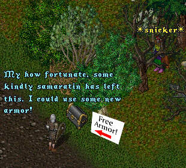
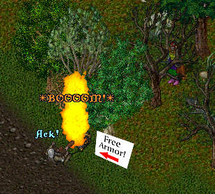
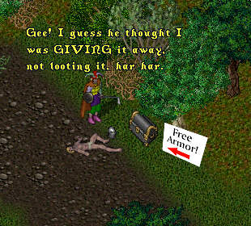
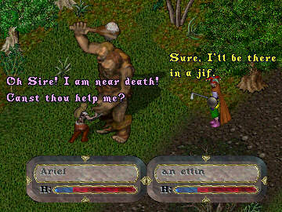
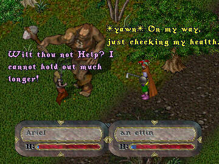
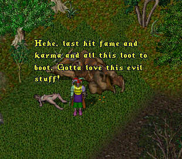
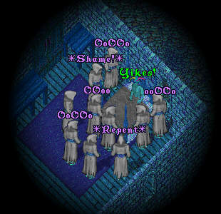

 |
 |
 |
Hmmmn, the old trapped chest trick, how many of us have
been caught with that one. But wait, I hear the plaintive
cry of a damsel in distress. Surely even the new 'evil'
ImaNewbie will not be able to resist coming to the rescue.
 |
 |
 |
Looks like I was wrong again, but then ... that night as
ImaNewbie is asleep in his bed, suddenly he awakes to find
his room bathed in a strange eerie light and the bed
surrounded with the spectres of those poor souls he so
recently dispatched to the hereafter.
 |